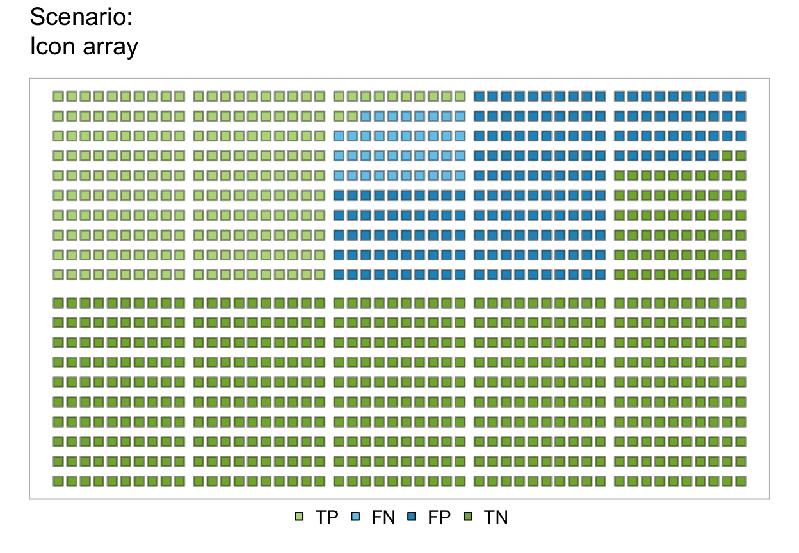
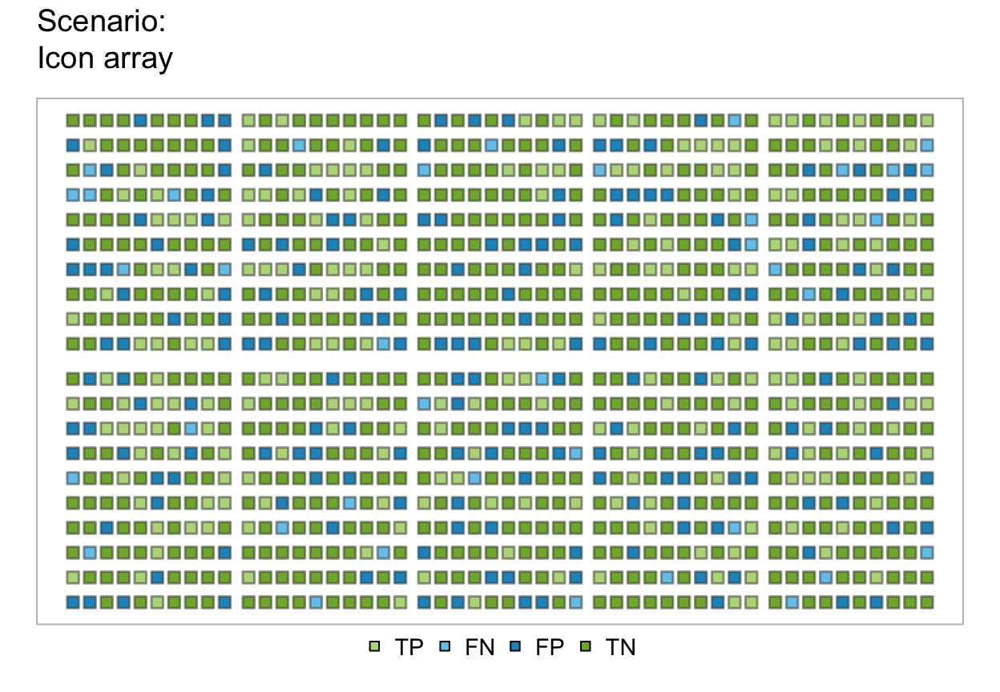
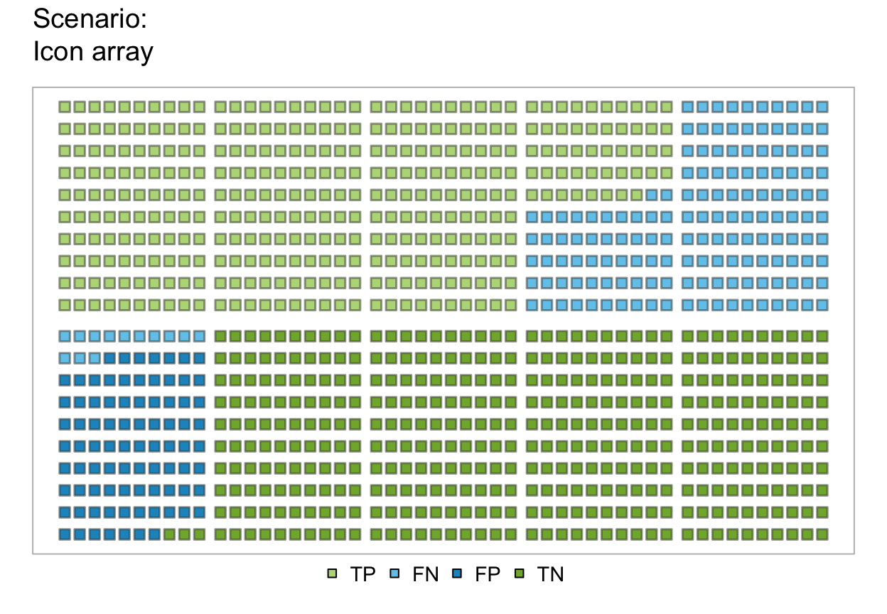
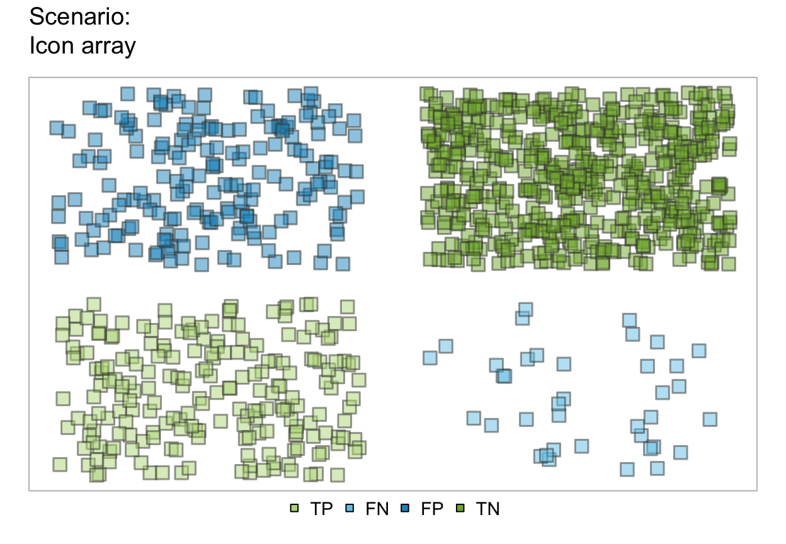
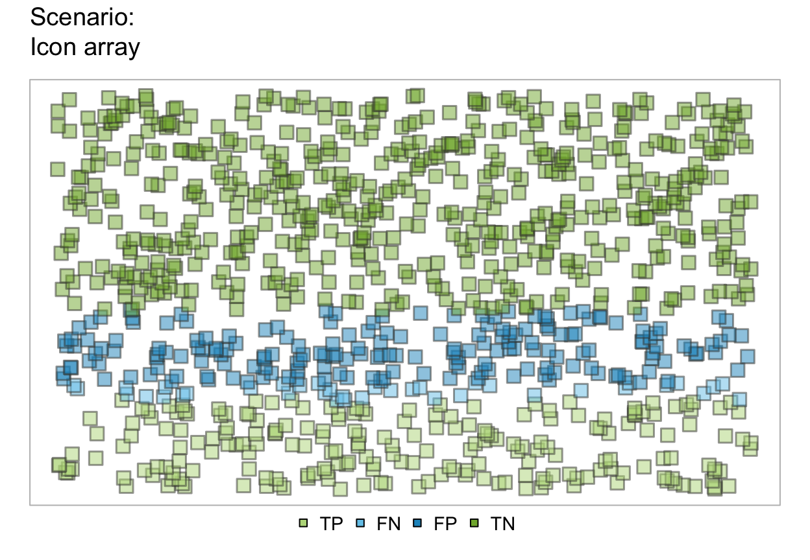
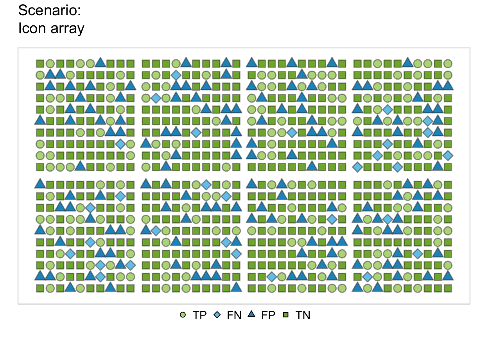
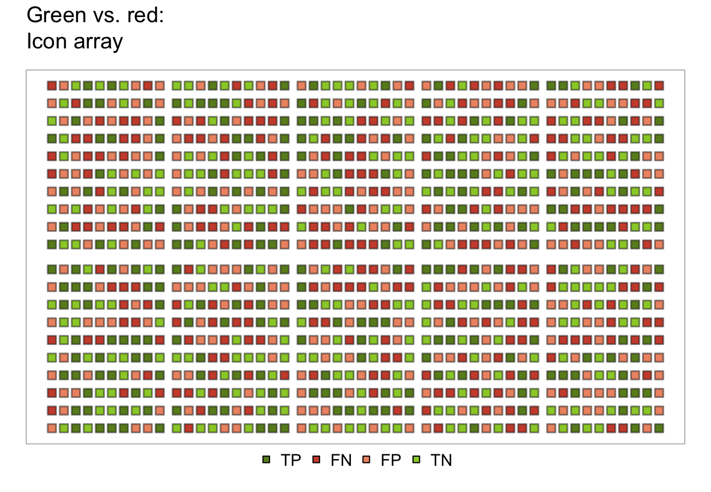
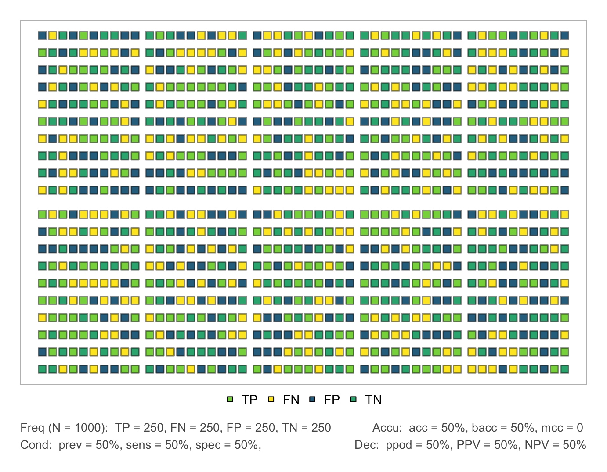
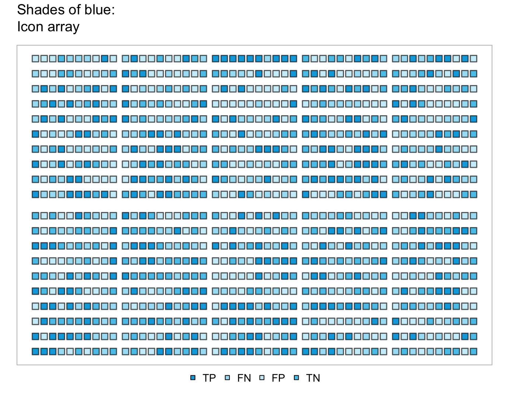

plot_icons plots a population of which individual's
condition has been classified correctly or incorrectly as icons
from a sufficient and valid set of 3 essential probabilities
(prev, and
sens or its complement mirt, and
spec or its complement fart)
or existing frequency information freq
and a population size of N individuals.
plot_icons(prev = num$prev, sens = num$sens, mirt = NA, spec = num$spec, fart = NA, N = freq$N, arr_type = "array", by = "all", ident_order = c("hi", "mi", "fa", "cr"), icon_types = 22, icon_size = NULL, icon_brd_lwd = 1.5, block_d = NULL, border_d = 0.1, block_size_row = 10, block_size_col = 10, nblocks_row = NULL, nblocks_col = NULL, fill_array = "left", fill_blocks = "rowwise", lbl_txt = txt, title_lbl = txt$scen_lbl, cex_lbl = 0.9, col_pal = pal, transparency = 0.5, mar_notes = TRUE, ...)
Arguments
| prev | The condition's prevalence |
|---|---|
| sens | The decision's sensitivity |
| mirt | The decision's miss rate |
| spec | The decision's specificity value |
| fart | The decision's false alarm rate |
| N | The number of individuals in the population.
A suitable value of |
| arr_type | The icons can be arranged in different ways resulting in different types of displays:
|
| by | A character code specifying a perspective to split the population into subsets, with 4 options: |
| ident_order | The order in which icon identities
(i.e., hi, mi, fa, and cr) are plotted.
Default: |
| icon_types | Specifies the appearance of the icons as a vector.
Accepts values from 1 to 25 (see |
| icon_size | Manually specifies the size of the icons via |
| icon_brd_lwd | Specifies the border width of icons (if applicable). |
| block_d | The distance between blocks (does not apply to "filleft", "filltop", and "scatter") |
| border_d | The distance of icons to the border. Additional options for controlling the arrangement of arrays
(for |
| block_size_row | specifies how many icons should be in each block row. |
| block_size_col | specifies how many icons should be in each block column. |
| nblocks_row | specifies how many blocks there are in each row. Is calculated by default. |
| nblocks_col | specifies how many blocks are there in each column. Is calculated by default. |
| fill_array | specifies how the blocks are filled into the array (Options "left" (default) and "top"). |
| fill_blocks | specifies how icons within blocks are filled
(Options: Generic text and color options: |
| lbl_txt | Default label set for text elements.
Default: |
| title_lbl | Text label for current plot title.
Default: |
| cex_lbl | Scaling factor for text labels.
Default: |
| col_pal | Color palette.
Default: |
| transparency | Specifies the transparency for overlapping icons
(not for |
| mar_notes | Boolean option for showing margin notes.
Default: |
| ... | Other (graphical) parameters. |
Value
Nothing (NULL).
Details
If probabilities are provided, a new list of
natural frequencies freq is computed by comp_freq.
By contrast, if no probabilities are provided,
the values currently contained in freq are used.
By default, comp_freq rounds frequencies to nearest integers
to avoid decimal values in freq.
See also
Other visualization functions: plot.riskyr,
plot_area, plot_bar,
plot_curve, plot_fnet,
plot_mosaic, plot_plane,
plot_prism, plot_tab,
plot_tree
Examples
# ways to work: plot_icons(N = 1000) # icon array with default settings (arr_type = "array")plot_icons(arr_type = "shuffledarray", N = 1000) # icon array with shuffled IDs# array types: plot_icons(arr_type = "mosaic", N = 1000) # areas as in mosaic plotplot_icons(arr_type = "fillequal", N = 1000) # areas of equal size (probability as density)plot_icons(arr_type = "fillleft", N = 1000) # icons filled from left to right (in columns)plot_icons(arr_type = "filltop", N = 1000) # icons filled from top to bottom (in rows)plot_icons(arr_type = "scatter", N = 1000) # icons randomly scattered# by argument: plot_icons(N = 1000, by = "all") # hi, mi, fa, cr (TP, FN, FP, TN) casesplot_icons(N = 1000, by = "cd") # (hi + mi) vs. (fa + cr) (TP + FN vs. FP + TN) casesplot_icons(N = 1000, by = "dc") # (hi + fa) vs. (mi + cr) (TP + FP vs. FN + TN) casesplot_icons(N = 1000, by = "ac") # (hi + cr) vs. (fa + mi) (TP + TN vs. FP + FN) cases# Icons types and colors: plot_icons(N = 600, by = "all", col_pal = pal_bwp) # by all: 4 symbol typesplot_icons(N = 600, by = "ac", col_pal = pal_bwp) # by accuracy: 2 symbol typesplot_icons(N = 200, icon_types = c(21, 23, 24, 22), icon_size = 2, block_size_row = 5, block_size_col = 5, block_d = .5, border_d = .9, col_pal = pal_rgb)plot_icons(N = 1250, sens = 0.9, spec = 0.9, prev = 0.9, icon_types = c(21, 23, 24, 23), block_size_row = 10, block_size_col = 5, nblocks_row = 5, nblocks_col = 5, block_d = 0.8, border_d = 0.2, fill_array = "top")# variants: plot_icons(N = 800, arr_type = "array", icon_types = c(21, 22, 23, 24), block_d = 0.5, border_d = 0.5, col_pal = pal_vir)plot_icons(N = 800, arr_type = "shuffledarray", icon_types = c(21, 23, 24, 22), block_d = 0.5, border_d = 0.5)plot_icons(N = 800, arr_type = "shuffledarray", icon_types = c(21, 23, 24, 22), icon_brd_col = grey(.33, .99), icon_brd_lwd = 3, cex_lbl = 1.2)plot_icons(N = 800, arr_type = "fillequal", icon_types = c(21, 22, 22, 21), icon_brd_lwd = .5, cex = 1, cex_lbl = 1.1)# Text and color options: plot_icons(N = 1000, prev = .5, sens = .5, spec = .5, arr_type = "shuffledarray", title_lbl = "", lbl_txt = txt_TF, col_pal = pal_vir, mar_notes = FALSE)plot_icons(N = 1000, prev = .5, sens = .5, spec = .5, arr_type = "shuffledarray", title_lbl = "Green vs. red", col_pal = pal_rgb, transparency = .5)plot_icons(N = 1000, prev = .5, sens = .5, spec = .5, arr_type = "shuffledarray", title_lbl = "Shades of blue", col_pal = pal_kn, transparency = .3)